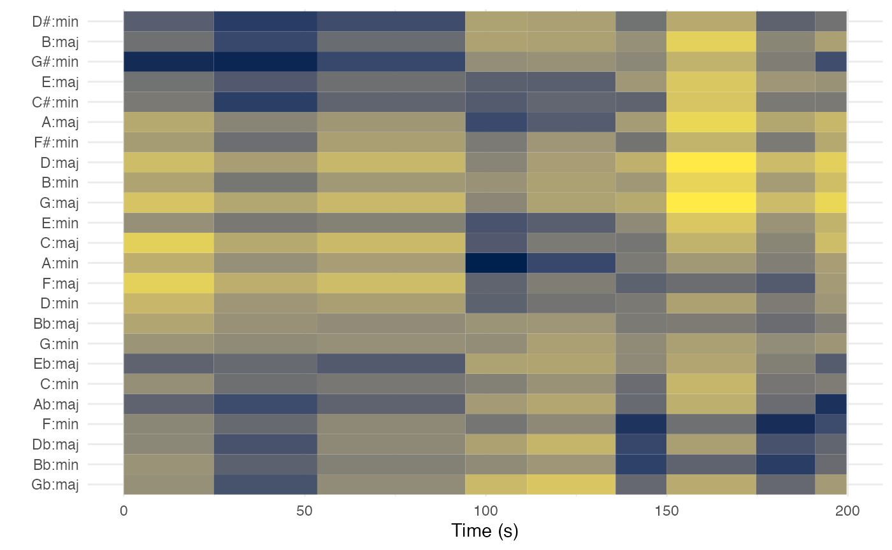
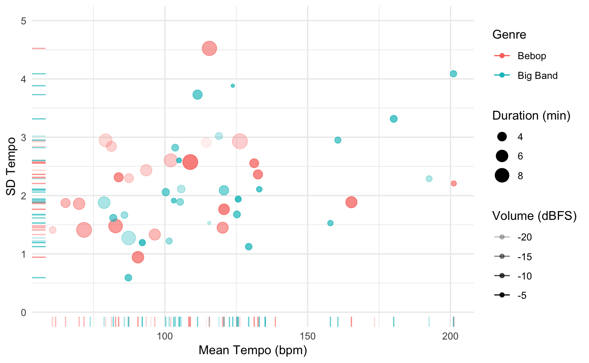
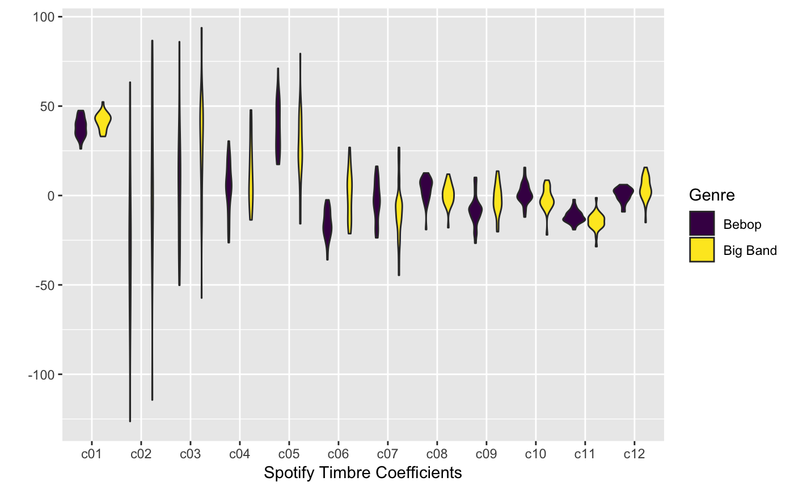

compmus-w10.Rmd## ── Attaching packages ─────────────────────────────────────────────────────────────────────────────────────── tidyverse 1.2.1 ──## ✔ ggplot2 3.1.0 ✔ purrr 0.3.2
## ✔ tibble 2.1.1 ✔ dplyr 0.8.0.1
## ✔ tidyr 0.8.3 ✔ stringr 1.4.0
## ✔ readr 1.3.1 ✔ forcats 0.4.0## ── Conflicts ────────────────────────────────────────────────────────────────────────────────────────── tidyverse_conflicts() ──
## ✖ dplyr::filter() masks stats::filter()
## ✖ dplyr::lag() masks stats::lag()##
## Attaching package: 'compmus'## The following object is masked from 'package:spotifyr':
##
## get_playlist_audio_featuresIn order for the code below to run, it is also necessary to set up Spotify login credentials for spotifyr.
The focus of the readings this week were chord and key estimation. One set of standard templates is below: 1–0 coding for the chord templates and the Krumhansl–Kessler key profiles.
circshift <- function(v, n) {if (n == 0) v else c(tail(v, n), head(v, -n))}
# C C# D Eb E F F# G Ab A Bb B
major_chord <-
c(1, 0, 0, 0, 1, 0, 0, 1, 0, 0, 0, 0)
minor_chord <-
c(1, 0, 0, 1, 0, 0, 0, 1, 0, 0, 0, 0)
seventh_chord <-
c(1, 0, 0, 0, 1, 0, 0, 1, 0, 0, 1, 0)
major_key <-
c(6.35, 2.23, 3.48, 2.33, 4.38, 4.09, 2.52, 5.19, 2.39, 3.66, 2.29, 2.88)
minor_key <-
c(6.33, 2.68, 3.52, 5.38, 2.60, 3.53, 2.54, 4.75, 3.98, 2.69, 3.34, 3.17)
chord_templates <-
tribble(
~name , ~template,
'Gb:7' , circshift(seventh_chord, 6),
'Gb:maj', circshift(major_chord, 6),
'Bb:min', circshift(minor_chord, 10),
'Db:maj', circshift(major_chord, 1),
'F:min' , circshift(minor_chord, 5),
'Ab:7' , circshift(seventh_chord, 8),
'Ab:maj', circshift(major_chord, 8),
'C:min' , circshift(minor_chord, 0),
'Eb:7' , circshift(seventh_chord, 3),
'Eb:maj', circshift(major_chord, 3),
'G:min' , circshift(minor_chord, 7),
'Bb:7' , circshift(seventh_chord, 10),
'Bb:maj', circshift(major_chord, 10),
'D:min' , circshift(minor_chord, 2),
'F:7' , circshift(seventh_chord, 5),
'F:maj' , circshift(major_chord, 5),
'A:min' , circshift(minor_chord, 9),
'C:7' , circshift(seventh_chord, 0),
'C:maj' , circshift(major_chord, 0),
'E:min' , circshift(minor_chord, 4),
'G:7' , circshift(seventh_chord, 7),
'G:maj' , circshift(major_chord, 7),
'B:min' , circshift(minor_chord, 11),
'D:7' , circshift(seventh_chord, 2),
'D:maj' , circshift(major_chord, 2),
'F#:min', circshift(minor_chord, 6),
'A:7' , circshift(seventh_chord, 9),
'A:maj' , circshift(major_chord, 9),
'C#:min', circshift(minor_chord, 1),
'E:7' , circshift(seventh_chord, 4),
'E:maj' , circshift(major_chord, 4),
'G#:min', circshift(minor_chord, 8),
'B:7' , circshift(seventh_chord, 11),
'B:maj' , circshift(major_chord, 11),
'D#:min', circshift(minor_chord, 3),
)
key_templates <-
tribble(
~name , ~template,
'Gb:maj', circshift(major_key, 6),
'Bb:min', circshift(minor_key, 10),
'Db:maj', circshift(major_key, 1),
'F:min' , circshift(minor_key, 5),
'Ab:maj', circshift(major_key, 8),
'C:min' , circshift(minor_key, 0),
'Eb:maj', circshift(major_key, 3),
'G:min' , circshift(minor_key, 7),
'Bb:maj', circshift(major_key, 10),
'D:min' , circshift(minor_key, 2),
'F:maj' , circshift(major_key, 5),
'A:min' , circshift(minor_key, 9),
'C:maj' , circshift(major_key, 0),
'E:min' , circshift(minor_key, 4),
'G:maj' , circshift(major_key, 7),
'B:min' , circshift(minor_key, 11),
'D:maj' , circshift(major_key, 2),
'F#:min', circshift(minor_key, 6),
'A:maj' , circshift(major_key, 9),
'C#:min', circshift(minor_key, 1),
'E:maj' , circshift(major_key, 4),
'G#:min', circshift(minor_key, 8),
'B:maj' , circshift(major_key, 11),
'D#:min', circshift(minor_key, 3))Armed with these templates, we can make chordograms and keygrams for individual pieces. Similar to previous weeks, we start by choosing a level of hierarchy and then summarise the chroma features a that level. Higher levels like section are more appropriate for key profiles; lower levels like beat are more appropriate for chord profiles.
The following code fetches the analysis for Zager and Evans’s ‘In the Year 2525’ (1969).
twenty_five <-
get_tidy_audio_analysis('5UVsbUV0Kh033cqsZ5sLQi') %>%
compmus_align(sections, segments) %>%
select(sections) %>% unnest(sections) %>%
mutate(
pitches =
map(segments,
compmus_summarise, pitches,
method = 'mean', norm = 'manhattan'))The new helper function compmus_match_pitch_template compares the averaged chroma vectors against templates to yield a chordo- or keygram. The two truck-driver modulations from G-sharp minor through A minor to B-flat minor are clear.
twenty_five %>%
compmus_match_pitch_template(key_templates, 'euclidean', 'manhattan') %>%
ggplot(
aes(x = start + duration / 2, width = duration, y = name, fill = d)) +
geom_tile() +
scale_fill_viridis_c(option = 'E', guide = 'none') +
theme_minimal() +
labs(x = 'Time (s)', y = '')
Once you have the code running, try the following adaptations.
| Domain | Normalisation | Distance | Summary Statistic |
|---|---|---|---|
| Non-negative (e.g., chroma) | Manhattan | Manhattan | mean |
| Aitchison | Aitchison centre | ||
| Euclidean | cosine | root mean square | |
| angular | root mean square | ||
| Chebyshev | [none] | max | |
| Full-range (e.g., timbre) | [none] | Euclidean | mean |
| Euclidean | cosine | root mean square | |
| angular | root mean square |
Several students have asked how to incorporate the low-level audio analysis features at the playlist level. Here is one strategy for doing so, which we will extend next week. As an example, let’s consider the difference between Spotify’s ‘Sound of’ playlists for bebop and big band.
After loading the playlists, we can use the helper function add_audio_analysis to fetch the low-level features for every track. Adding audio analysis for every track is a slow operation, and so for the purposes of this exercise, we will limit ourselves to 30 tracks from each playlist. The results makes heavy use of list-columns, which are discussed in more detail in the optional purrr exercise on DataCamp.
bebop <-
get_playlist_audio_features(
'thesoundsofspotify',
'55s8gstHcaCyfU47mQgLrB') %>%
slice(1:30) %>%
add_audio_analysis()
bigband <-
get_playlist_audio_features(
'thesoundsofspotify',
'2cjIvuw4VVOQSeUAZfNiqY') %>%
slice(1:30) %>%
add_audio_analysis()
jazz <-
bebop %>% mutate(genre = "Bebop") %>%
bind_rows(bigband %>% mutate(genre = "Big Band"))For non-vector features, we can use the summarise_at command to collect summary statistics like mean and standard deviation.
jazz %>%
mutate(
sections =
map(
sections,
summarise_at,
vars(tempo, loudness, duration),
list(section_mean = mean, section_sd = sd))) %>%
unnest(sections) %>%
ggplot(
aes(
x = tempo,
y = tempo_section_sd,
colour = genre,
alpha = loudness)) +
geom_point(aes(size = duration / 60)) +
geom_rug() +
theme_minimal() +
ylim(0, 5) +
labs(
x = 'Mean Tempo (bpm)',
y = 'SD Tempo',
colour = 'Genre',
size = 'Duration (min)',
alpha = 'Volume (dBFS)')## Warning: Removed 11 rows containing missing values (geom_point).
When working with vector-valued features like chroma or timbre, we need to use functions from the previous weeks. Here is an example of comparing average timbre coefficients in bebop and big band. Coefficient 6 looks like the most promising marker distinguishing these genres, but we should verify that with cepstrograms and listening tests of specific pieces, supported by the Spotify documentation for its timbre features.
jazz %>%
mutate(
timbre =
map(
segments,
compmus_summarise,
timbre,
method = 'mean')) %>%
select(genre, timbre) %>%
compmus_gather_timbre %>%
ggplot(aes(x = basis, y = value, fill = genre)) +
geom_violin() +
scale_fill_viridis_d() +
labs(x = 'Spotify Timbre Coefficients', y = '', fill = 'Genre')